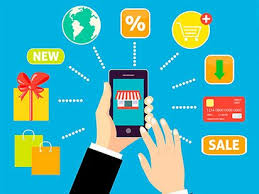

PRINCIPAL
B2B
B2C
B2E
C2C
B2G
C2G
ECOMMERCE DE INFOPRODUCTOS
ECOMMERCE DE SERVICIOS
ECOMMERCE SOFTWARE AS A SERVICE (SAAS)
ECOMMERCE OPEN SOURCE
ECOMMERCE DE PRODUCTOS DIGITALES
ECOMMERCE DE PRODUCTOS DIGITALES
Son aquellos productos susceptibles de transformarse
en bytes. Cualquier contenido que pueda,distribuirse
consumirse, pagarse y consumirse a través de internet.
Son todos aquellos productos que se pueden vender
por Internet que no son físicos, están formador
de información digital o bits de información y que
solo puedes acceder a ellos a través de un
celular, computadora o algún dispositivo tecnológico
capaz de leer se codificación.
Existen muchas plataformas donde puedes comprar
alguno de estos productos digitales, actualmente
Hotmart es una que ha tenido un crecimiento
importante en venta de productos digitales.
La mayor ventaja de crear un producto digital es que
no se tiene un límite de stock, es decir, el
producto puede ser vendido de forma ilimitada,
dándote muchas más ganancias por la misma creación.
